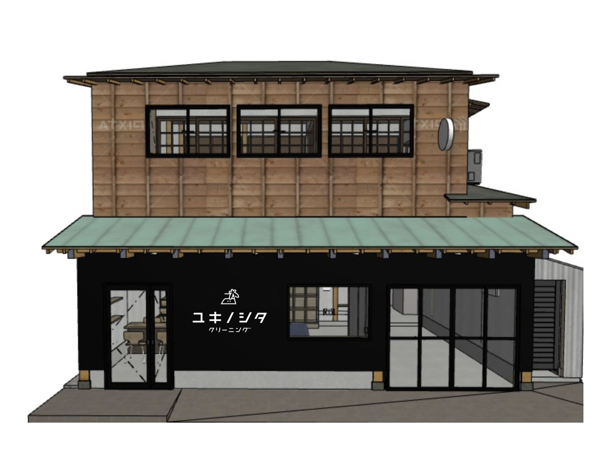

クリーニングを
おしゃれで快適なものに
ながく・きれいに・使う
いま、大量消費の暮らしからモノを捨てない暮らしへの転換を求められています。これからは、モノを大切に、長く使うよう、ひとり一人が意識をしていく時代です。私たちは、そうした新しい暮らしのあり方が、少しでも楽しくなるようなお手伝いをしていきたいと考えています。服をただ長く着るのではなく、きれいに着つづけることができるようなお手伝いをします。そうすることで服への愛着が一層深くなることを期待しつつ。
時代にあわせて私たち自身も変わっていきます。環境に優しいクリーニング店を目指して、サスティナビリティについて本気で考えます。人と地球の新たな関係づくりを日々の生活から提案していきます。

新しい時代にあったクリーニング店を目指して
地域に寄りそう
私たちは、地域のお客さまを大切にします。
よりよいサービスを心がけ、お客さまとのコミュニケーションを大切にします。
地球環境を考える
未来を見据えて、持続可能なクリーニング業のあり方を真剣に考えます。プラスチック製品の使用を必要最低限におさえるとともに、環境に優しい洗剤などを追求していきます。
ファッションを提案する
流行を常に追うファストファッションの考え方から脱却し、新たなファッションのあり方を提案します。それは、「ながく・きれいに・使う」。地球環境保護の観点からも重要だと考えています。

LINE公式アカウント
友だち追加はこちらから。